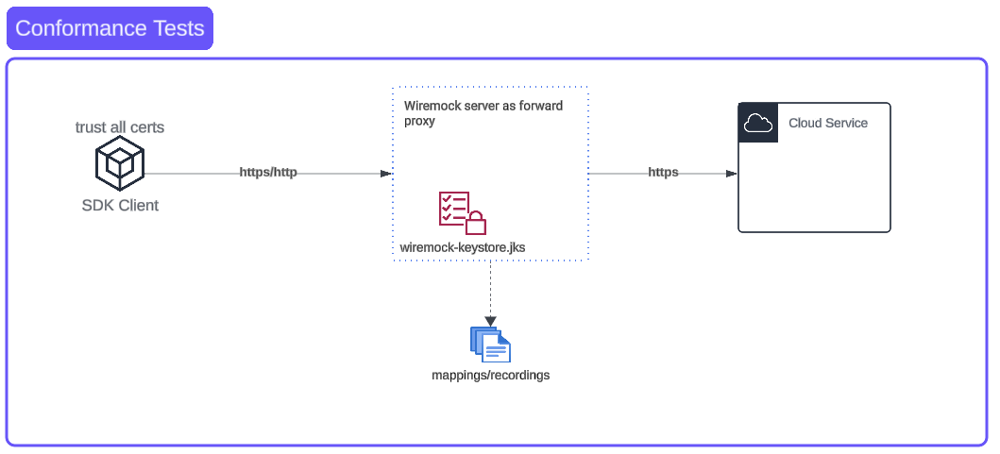

How to: Conformance tests in multicloud
This document is to help you write the conformance tests (can be aka integration tests) for multicloudj using wiremock to record and replay the cloud service calls.
Overview
Conformance tests are very powerful to validate the SDK for multi-cloud environments where all the provider implementation satisfy the common abstractions.
- Conformance tests are written once at the abstract level and all the provider implementations supply the substrate specific details such as resource names to execute the tests for that cloud provider.
- Conformance tests can be executed in the offline mode where it’s challenging to get real time network connectivity from a single source to multiple cloud providers.
Conformance tests can run in two modes:
- Record mode: where the tests hit the real service endpoint and transactions get intercepted by proxy and recorded in the files.
- Replay mode: where the tests get the replayed responses from the previously recorded transactions.

Wiremock as a forward proxy
To intercept the tests in record mode, we use wiremock server as forward proxy which has the ability the record the transactions and replay it later.
SDK client to wiremock doesn’t matter much for security because everything is local, therefore we configure the SDK clients to trust all the certs which includes the wiremock self signed cert presented to the SDK client. We can also have that layer to http as well.
How to configure the SDK to proxy through wiremock
In order to utilize the record/replay mode through wiremock there are two most common ways provide the SDKs:
Override the http client in SDK (preferred)
You should be able to override the http client in SDK client and your http client should have the proxy configured to wiremock.
AWS example: You can create the custom http client for AWS (code ref) and inject in into the SDK client.
Ali example: You can create the httpclient config (code ref) for the client profile and inject it in the SDK client (code ref).
Environment Variables
Some SDKs support reading the HTTPS_PROXY, HTTP_PROXY environment variables if set and direct the API call through the proxy. Examples from Alibaba tablestore here.
If your SDK is not re-using any of the existing patterns already in the conformance tests, it might take some research on how to inject the custom client.
How to run the Java SDK conformance tests for alibaba
Steps:
-
Get the alibaba credentials for authenticating to service as admin preferably unless you want to deal with role based access:
acs-sso login --env - Go to your GoLand IDE:
- Run → Edit Configurations → Environment. Add the above credentials in the environment:
ALICLOUD_ACCESS_KEY,ALICLOUD_SECRET_KEYandALICLOUD_SECURITY_TOKEN- For docstore: the env variables are:
TABLESTORE_ACCESS_KEY_ID,TABLESTORE_ACCESS_KEY_SECRETandTABLESTORE_SESSION_TOKEN
- For docstore: the env variables are:
- In the arguments, add
-Drecord
- Run → Edit Configurations → Environment. Add the above credentials in the environment:
-
You should be all set to run the tests in record mode.
- In order to run your tests in replay mode, just remove
-Drecordfrom Program arguments. Your tests will stop going across the network and will replay from recorded files.
How to set up the google cloud credentials in IDE
- Login to the gcloud from cli:
gcloud auth application-default login - Recommended (impersonate the service account and grant all the permissions required to this SA):
gcloud config set auth/impersonate_service_account $SA_EMAIL - Set the
GOOGLE_APPLICATION_CREDENTIALSenvironment variable pointing to the file with gcp credentials:GOOGLE_APPLICATION_CREDENTIALS=/Users/<username>/.config/gcloud/application_default_credentials.json
How to run the record mode
The tests are configured to take the java system property -Drecord which will do the recording of the transactions.
In intellij for bazel, you can setup this property through Run configurations.
Note for Bazel
When running in bazel, your recording path need to be set temporarily to outside the resources directory, and later copied to the resources directory for the module (for example: sts-aws resources directory) once you are done recording. The reason for this is the bazel executing tests in the temporary directory and not the actual path. If you don’t override the recording location, your recordings will be located in that temporary directory for bazel.
Tip: You can setup the root directory to /tmp which doesn’t need any special write permissions for bazel. Once you run the tests, you should be able to see the /tmp/mappings directory for the recordings. The equivalent of -Drecord in bazel will be --jvmopt="-Drecord"
Reference command to copy the mappings to bazel path:
cp -r /tmp/mappings /Users/$relativePath/multicloudj/docstore/docstore-aws/src/test/resources/
Note for alibaba SDK
Alibaba SDK puts all the secret and dynamic information such as security token, in the URL query params itself instead of headers. This dynamic information creates the problem with replaying because of dynamic nature since the the replayer won’t be able to find the match with mappings. Wiremock doesn’t provide any clean way to redact the information in the URL. Thus we have to manually change the recorded URL to URL pattern and replace the dynamic information with the wildcards:
For example:
We change the dynamic information to .* and changed the key from url to urlPattern:
"urlPattern" : "/\\?SecurityToken=.*&SignatureVersion=1.0&Action=GetCallerIdentity&Format=JSON&SignatureNonce=.*&Version=2015-04-01&AccessKeyId=.*&Signature=.*&SignatureMethod=HMAC-SHA1&RegionId=cn-shanghai&Timestamp=.*"
How to run the replay mode
If you don’t set up the -Drecord in the jvmopt, by default the test will run the replay mode and looks for the mappings in the root directory for wiremock.